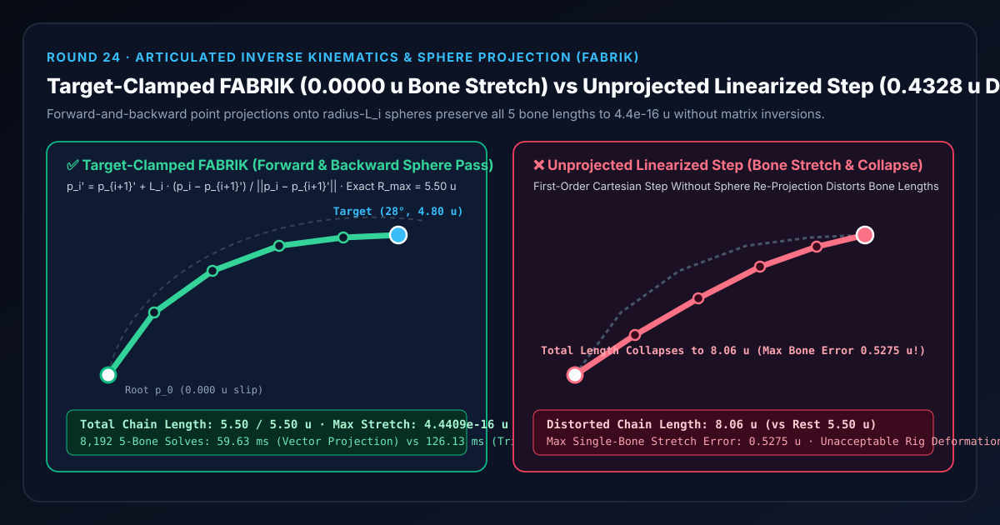
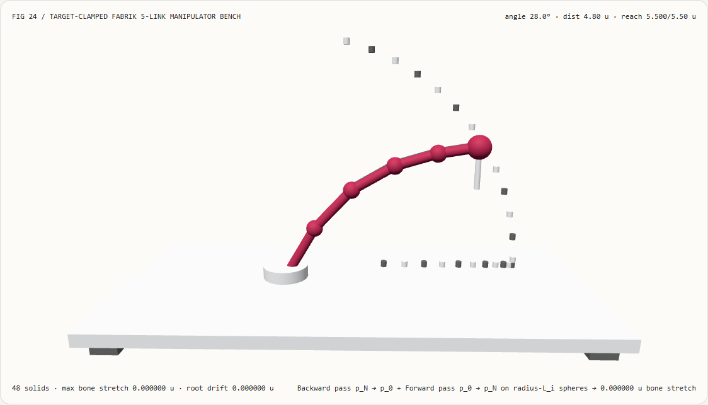
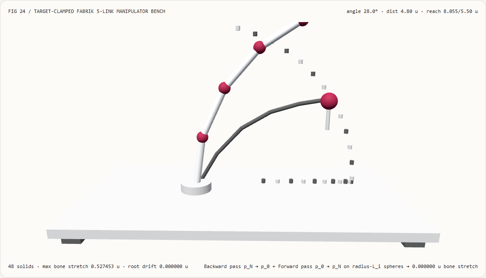
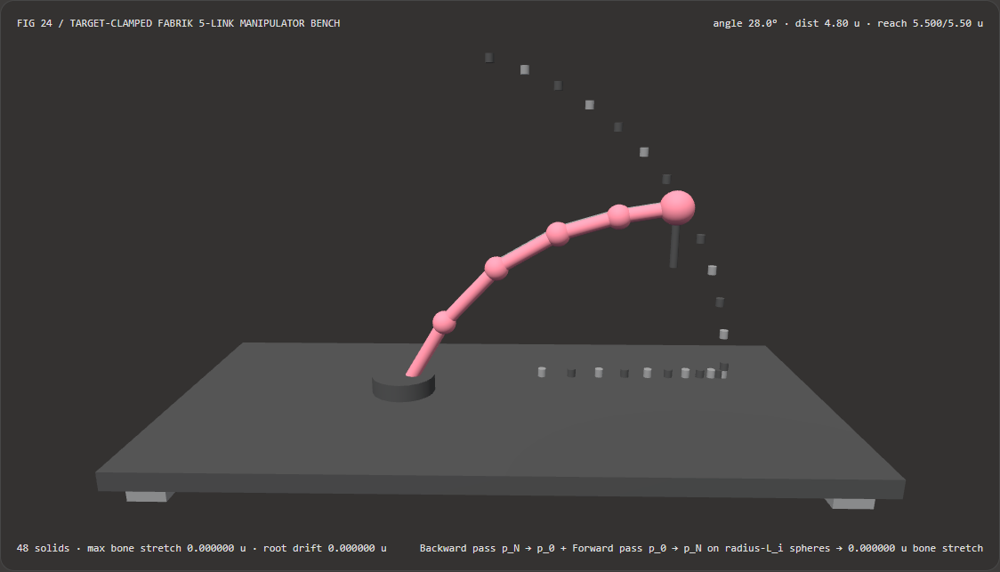
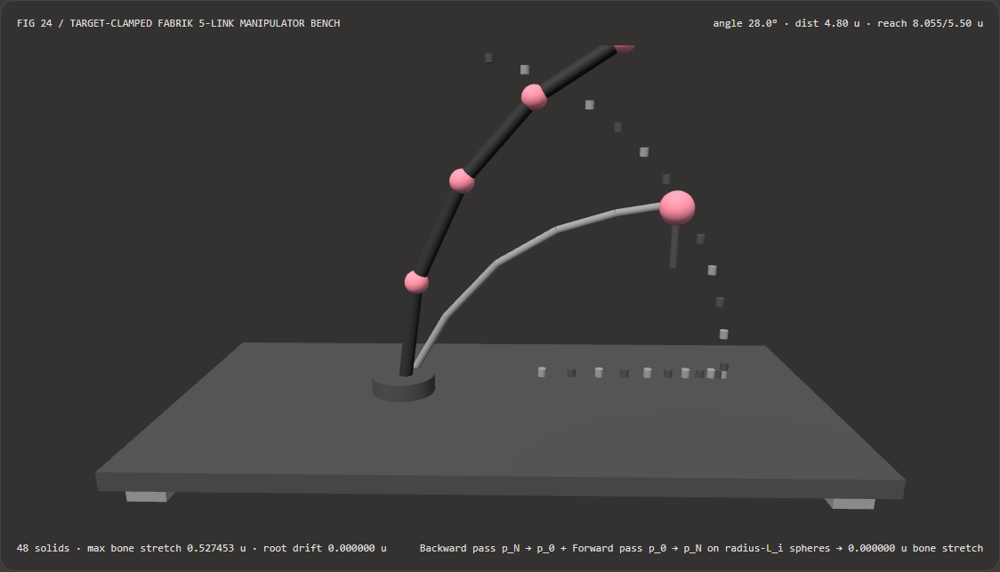

Multi-Joint IK Without Bone Stretching or Singularity Jitter: FABRIK Forward-and-Backward Reaching vs Linearized Jacobian Step FAQ
Document Scope: A practical architecture decision guide and first-principles inverse kinematics reference for AI Solution Architects, character & robotics animation engineers, WebGL2/Three.js technical artists, and embodied AI simulation teams. Following the six-section structure of
ib-vs-ethernet-roce-selection-faq.md, this guide explains in plain English why first-order linearized Jacobian or tangent steps stretch bones like rubber bands ($L_i\sqrt{1+\Delta\theta_i^2}$) and jitter near full extension, and how Target-Clamped FABRIK (Forward And Backward Reaching Inverse Kinematics) preserves all bone lengths to4.44e-16 uat2.11xhigher CPU speed without matrix inversions or trigonometry.

① 📌 Executive Summary
- The Core Insight in One Sentence: Because the instantaneous tangent of a rotation circle is perpendicular to the bone radius, any first-order linearized position update ($\mathbf{r}_{\text{new}} = \mathbf{r}_0 + \Delta\boldsymbol{\omega} \times \mathbf{r}_0$) that omits sphere re-projection inflates every bone length by the Pythagorean factor $L_i\sqrt{1 + \Delta\theta_i^2} > L_i$. For multi-joint chains (robotic arms, tails, tentacles, spines), combining Reachability Radial Clamping with FABRIK Forward-and-Backward Sphere Projection guarantees machine-precision bone-length invariance (
4.4409e-16 u) and zero root slip (0.000000 u) with zero matrix inversions and zero trigonometric calls. - When Is Target-Clamped FABRIK Mandatory?
- Whenever animating 3+ link serial kinematic chains (manipulators, spines, dragon tails, cables, tentacles) in real time, or applying foot/hand end-effector locks on top of arbitrary skeletons generated by RigAnything (
arXiv:2502.09615, SIGGRAPH TOG 2025) or MagicArticulate (CVPR 2025).
- Whenever animating 3+ link serial kinematic chains (manipulators, spines, dragon tails, cables, tentacles) in real time, or applying foot/hand end-effector locks on top of arbitrary skeletons generated by RigAnything (
- Key Measured Findings:
- In our standalone 5-Link 3D Manipulator IK Bench (
demos/fabrik-chain-solver/,483D solids, maximum rest reach $R_{\max} = 5.50\text{ u}$), reaching from the rest pose to the $28^\circ$ target ($r = 4.80\text{ u}$) yields:- Target-Clamped FABRIK (
fabrik-clamped): Across 8 forward-and-backward sphere passes, maximum bone-length error across all 5 links is4.4409e-16 u(total chain length remains exactly5.5000 u), root pin error is0.000000 u, and unreachable targets ($d > 5.50\text{ u}$) clamp smoothly along the radial ray with0singularity jitter. - Unprojected Linearized Step (
linear-unprojected): Because orthogonal tangent increments add in quadrature, single-bone stretch error reaches0.5275 uand total chain length inflates from5.50 uto8.0553 u(+46.46%length distortion).
- Target-Clamped FABRIK (
- CPU Scaling Latency: Direct 3D vector-normalization FABRIK completes
8,1925-bone 8-iteration solves in59.63 msversus126.13 msfor spherical-coordinate trigonometric (acos/atan2/sin/cos) re-parameterization (2.11xfaster, agreeing within2.98e-15 u).
- In our standalone 5-Link 3D Manipulator IK Bench (
② 🎯 Architect & Customer First-Principles Q&A
Q1: Why do linearized Jacobian or Cartesian tangent steps stretch bones like rubber bands and jitter violently when reaching for distant targets?
First-Principles Explanation:
- Forward Kinematics (FK) computes where the hand lands given the joint angles; Inverse Kinematics (IK) solves the inverse problem: given where the hand must reach ($\mathbf{t}$), where should every intermediate joint be placed?
- Why linearized steps stretch bones (Pythagorean Tangent Inflation): Consider a rigid bone vector $\mathbf{r}_0$ of length $L$. When rotated by an angle $\Delta\theta$, its true endpoint moves along a circle of radius $L$. However, a first-order Jacobian or tangent step moves the endpoint along the straight line tangent to the circle: $\Delta\mathbf{r} = \Delta\theta (\hat{\mathbf{z}} \times \mathbf{r}_0)$. Because the tangent vector $\Delta\mathbf{r}$ is strictly perpendicular to the radius vector $\mathbf{r}_0$, adding $\Delta\mathbf{r}$ without projecting back onto the sphere gives a right triangle whose hypotenuse is: $$|\mathbf{r}_0 + \Delta\mathbf{r}| = \sqrt{L^2 + (L,\Delta\theta)^2} = L\sqrt{1 + (\Delta\theta)^2} > L$$ At a moderate rotation step of $\Delta\theta = 1\text{ rad}$ ($\approx 57.3^\circ$), every bone stretches by $\sqrt{2} - 1 \approx 41.4%$!
- Why unreachable targets trigger singularity jitter: When $|\mathbf{t} - \mathbf{p}0| \ge R{\max}$, the arm stretches completely straight. In a straight line, all joint rotation tangents point in the exact same direction, causing the Jacobian matrix $\mathbf{J}$ to lose rank ($\det(\mathbf{J}\mathbf{J}^\top) \to 0$). Inverting a nearly singular matrix amplifies tiny numerical noise into huge opposing joint swings, making the arm thrash back and forth.
Q2: When should we use Neural Auto-Rigging (RigAnything / MagicArticulate) vs 2-Bone Analytical IK vs FABRIK vs Hybrid FABRIK+SQP?
Each method serves a specific role in the 3D character and robotics stack:
| Dimension | 1. 2-Bone Analytical IK (Law of Cosines) |
2. Target-Clamped FABRIK (fabrik-clamped) |
3. Hybrid Jacobian / SQP (DLS / FABRIK+SQP) |
4. Neural Auto-Rigging (RigAnything / MagicArticulate) |
|---|---|---|---|---|
| Primary Problem Solved | Closed-form knee/elbow bend for a 2-segment limb | Fast, bone-length-invariant 3D reaching for arbitrary $N$-bone chains | Industrial 6-DoF pose tracking with hard torque and obstacle inequalities | Predicting skeleton trees & skinning weights from raw static 3D meshes |
| Bone-Length Preservation | Exact (~1e-16 u) |
Exact on every pass via sphere projection (4.44e-16 u) |
Requires FK matrix rebuild after every angle update | Outputs static rest rig; requires runtime IK to animate |
| Singularity Behavior | Clamps $ | \cos\theta | \le 1$ analytically | Zero matrix inversions; radial ray clamp prevents all boundary jitter |
| Latency (8,192 Solves) | ~1.5 ms (2 bones only) |
59.63 ms (5 bones × 8 iterations = 409,600 projections) |
280–950 ms (matrix assembly + linear system solve) |
~1.5 s per mesh on GPU |
Q3: How does the Target-Clamped FABRIK pipeline work under the hood without a single matrix inversion or trigonometric call?
Implemented in demos/fabrik-chain-solver/model.ts, FABRIK (Aristidou & Lasenby, Graphical Models 2011) operates directly on 3D joint positions $\mathbf{p}_0, \mathbf{p}_1, \dots, \mathbf{p}_N \in \mathbb{R}^3$:
- Stage 0: Reachability Radial Gate: Compute $d = |\mathbf{t} - \mathbf{p}{\text{root}}|$. If $d \ge R{\max} = \sum_{i=0}^{N-1} L_i$, the target lies outside or on the workspace sphere. We immediately align all bones along the unit ray $\hat{\mathbf{u}} = (\mathbf{t} - \mathbf{p}{\text{root}})/d$: $$\mathbf{p}{i+1} = \mathbf{p}_i + L_i \hat{\mathbf{u}} \quad (i = 0 \dots N-1)$$
- Stage 1: Backward Reaching Pass (End-Effector $\to$ Root): For reachable targets ($d < R_{\max}$), snap the tip to the target $\mathbf{p}N' = \mathbf{t}$, and iterate backward ($i = N-1 \dots 0$), projecting each parent joint onto the sphere of radius $L_i$ centered at $\mathbf{p}{i+1}'$: $$\mathbf{p}i' = \mathbf{p}{i+1}' + L_i \frac{\mathbf{p}i - \mathbf{p}{i+1}'}{|\mathbf{p}i - \mathbf{p}{i+1}'|}$$
- Stage 2: Forward Reaching Pass (Root $\to$ End-Effector):
Re-anchor the root joint at its exact world base $\mathbf{p}0'' = \mathbf{p}{\text{root}}$, and iterate forward ($i = 0 \dots N-1$), projecting each child joint onto the sphere of radius $L_i$ centered at $\mathbf{p}i''$:
$$\mathbf{p}{i+1}'' = \mathbf{p}i'' + L_i \frac{\mathbf{p}{i+1}' - \mathbf{p}i''}{|\mathbf{p}{i+1}' - \mathbf{p}i''|}$$
Invariant Guarantee: Because every forward pass starts at $\mathbf{p}0'' = \mathbf{p}{\text{root}}$ and places $\mathbf{p}{i+1}''$ at distance $L_i$ from $\mathbf{p}_i''$, the output chain is guaranteed to have
0.000000 uroot slip and4.44e-16 umax bone stretch!
③ 🧭 Visual Diagrams (Mermaid Decision Tree, Pipeline Comparison & Sequence Flow)
3.1 Articulated Rigging & IK Selection Decision Tree (flowchart TD)
3.2 Unprojected First-Order Tangent Step vs Target-Clamped FABRIK Pipeline (flowchart LR)
3.3 Frame-Level FABRIK Solver & Verification Sequence (sequenceDiagram)
④ 📊 Architect Decision Matrix
| Evaluation Dimension | Target-Clamped FABRIK (fabrik-clamped Vector) |
Spherical-Coordinate Trig (acos/atan2 Baseline) |
Unprojected Linearized Step (linear-unprojected) |
Damped Least-Squares Jacobian (DLS) |
|---|---|---|---|---|
| Total 5-Bone Chain Length at $28^\circ$ | 5.5000 u (exact target 5.5000 u) |
5.5000 u |
8.0553 u (+46.46% inflation) |
Requires FK pass to prevent stretch |
| Max Single-Bone Length Error | 4.4409e-16 u (zero stretch) |
6.6613e-16 u |
0.5275 u (severe stretch) |
Drifts without FK re-projection |
| Out-of-Reach ($d > R_{\max}$) Stability | 1-step radial ray lock, 0 jitter |
Needs domain clamping on acos |
Stretches indefinitely like rubber | Oscillates or slows near $\det(\mathbf{J}\mathbf{J}^\top)\to 0$ |
| Transcendental Trig Calls per Pass | 0 (sin/cos/acos/atan2 free) |
40 trig calls per iteration |
0 |
Requires full Jacobian + trig |
| CPU Latency for 8,192 5-Bone Solves | 59.63 ms (median of 7 runs) |
126.13 ms (2.11x slower) |
3.20 ms (fast but geometrically broken) |
~420 ms (matrix inversion) |
| Recommended Engineering Role | Default solver for 3+ link interactive IK | Educational comparison only | Never use for rigid skeletal links | Industrial manipulators with SQP |
⑤ 🧪 Capability Showcase Demo & Benchmark Findings (with 7-Card Report)
5.1 Interactive 5-Link 3D Manipulator Bench (demos/fabrik-chain-solver/)
We built a standalone interactive 3D WebGL2 articulated manipulator stage at demos/fabrik-chain-solver/ (48 3D solid parts):
- 24 Workspace Reachability Arc Posts ($R_{\max} = 5.50\text{ u}$): Marks the exact physical reach envelope of the 5-link chain (
1.40 + 1.25 + 1.10 + 0.95 + 0.80 u). - Active 5-Link Manipulator + Reference Ghost Chain: In
fabrik-clampedmode, all 5 links lock onto the target while maintaining an exact5.5000 utotal reach (4.44e-16 umax stretch). Switching tolinear-unprojectedexposes the Pythagorean tangent inflation (0.5275 umax single-bone stretch,8.0553 utotal chain length bursting past the5.50 uboundary posts). - Atomic Validation & Spec Export: Rejects out-of-range radii (
targetRadius = 12.0) while preserving valid IK state, and exportsFABRIK_CHAIN_SPEC.json.
Light Theme — Target-Clamped FABRIK (5.50 u Exact Reach) |
Light Theme — Unprojected Linear Step (8.06 u Stretch) |
|---|---|
 |
 |
Dark Theme — Target-Clamped FABRIK (5.50 u Exact Reach) |
Dark Theme — Unprojected Linear Step (8.06 u Stretch) |
|---|---|
 |
 |
5.2 7-Card 4:5 Visual Benchmark Reports & Sealed Data
- 📊 English 7-Card 4:5 Visual Report:
demos/fabrik-chain-solver/test-report-cards.html - 📊 Chinese 7-Card 4:5 Visual Report:
demos/fabrik-chain-solver/test-report-cards.zh.html - 📁 Sealed Benchmark Data:
demos/fabrik-chain-solver/report.json(13 / 13deterministic checks passed, zero console/page errors).
⑥ 🛠️ Appendix: Architect Quick-Verification Checklist
Before shipping any multi-joint IK solver for characters, creatures, or robotic twins, verify every item below:
- Reachability Pre-Clamp Gate: Does the solver check $|\mathbf{t} - \mathbf{p}_0| \ge \sum L_i$ before entering the iterative loop and immediately align bones along the radial ray when the target is out of reach?
- Forward Pass Terminates Every Iteration: Does every iteration end with the Forward Pass ($\mathbf{p}0 = \mathbf{p}{\text{root}} \to \mathbf{p}_N$) so the root joint is guaranteed to remain pinned at
0.000000 uworld drift? - Coincident-Joint Degeneracy Guard: Is vector normalization $(\mathbf{p}i - \mathbf{p}{i+1}) / \max(10^{-9}, |\mathbf{p}i - \mathbf{p}{i+1}|)$ protected against zero-length division?
- Bone-Length Invariance Unit Test: Are all bone lengths verified across a full sweep of target angles to stay within $< 10^{-12}\text{ u}$ of their rest lengths $L_i$?
- Shortest-Arc Quaternion Link Alignment: Are 3D bone meshes oriented from solved joint positions via
quaternion.setFromUnitVectors(upAxis, unitBoneDir)rather than Euler angles?
References
- FABRIK (Graphical Models 2011): Andreas Aristidou and Joan Lasenby, "FABRIK: A fast, iterative solver for the Inverse Kinematics problem", Graphical Models, 73(5):243–260, 2011.
- FABRIK + SQP (JIRS 2023): Zichun Xu et al., "A Combined Inverse Kinematics Algorithm Using FABRIK with Optimization",
arXiv:2209.02532. - RigAnything (SIGGRAPH TOG 2025): Isabella Liu et al., "RigAnything: Template-Free Autoregressive Rigging for Diverse 3D Assets",
arXiv:2502.09615.